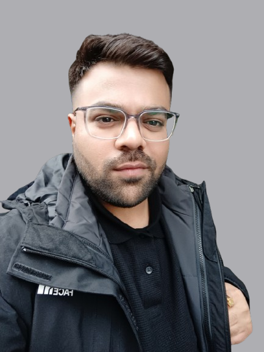

Harshilkumar Patel
Data Analyst · Supply Chain & Operations
Making logistics, warehousing and supply chains smarter with data and AI.
Demand planning, S&OP (Sales & Operations Planning) and production experience, combined with analytics, automation and AI.
Utrecht · Dutch B1, working towards B2 · Open to work · MBA Data Analytics (NL)

Results from my work experience, not from portfolio projects.
My work, along the supply chain
Follow a product from supplier to customer's home
The road shows where I've worked, from the factory to the customer's door. Press See what I found with data to see the key result at each stop.
Select a stop to jump to its projects
Data layer · under every stop
Is the data that runs the chain reliable and visible?Project data is public, simulated or my own, because real supply chain data is confidential. Each project shows its source.
Experience
Where I've done the work
-
Bever · The North Face stores
Sales Analyst 2023 – present- Forecast store demand and plan inventory, aligning stock levels with sales targets.
- Brief store managers on stock levels and incoming new SKUs (stock-keeping units).
- Prevent lost sales by sourcing out-of-stock items from warehouse inventory, so customers don't leave empty-handed.
- Conversion rate raised from 6–8% to 15–20%+.
Sales Associate 2021 – 2023 -
Patel Delivers
Last-mile delivery for Uber Eats in Apeldoorn, Amersfoort and Utrecht, plus flexible shifts through Temper and YoungOnes. I analysed my own 3,215 Uber trips: read the Field Notes.
-
Techno Electromech Pvt. Ltd.
Operations Analyst (Production) 2017 – 2019- Scaled monthly OEM output 8× (250 → 2,000+ units per customer) through capacity planning.
- Cut order-to-dispatch lead time by 2 days by restructuring cross-team workflows.
- Reduced production defects from 3.5% to under 2.5% with new quality-control inspections.
- Led the move to in-house LED panel assembly, including a pick-and-place automation rollout, for a unit of 30–40 operators.
Production Engineer 2015 – 2017 -
AtliQ Technologies
Data Analyst InternData cleaning, validation and reporting for an insurance client, including a Power BI dashboard for Shield Insurance.
Recommendations
What people I've worked with say
“He brought a data-backed mindset to retail operations before it was a part of his job title.”
“What always stood out was his ability to turn data into action.”
“He showed a clear ability to connect AI concepts with practical business applications.”
Let's talk about your supply chain
Open to Data Analyst and Supply Chain Analyst roles in the Netherlands.
- harshil.patel150@gmail.com
- harshil-patel-188b2274
- GitHub
- github.com/HP85-NL